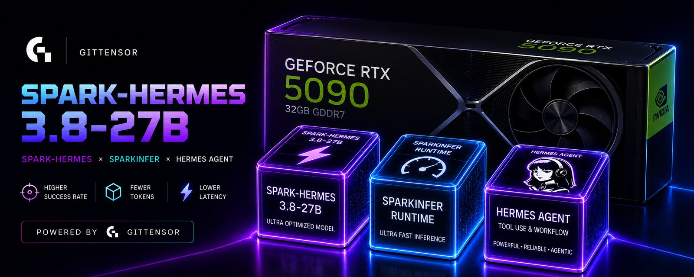

One pinned agent. A competition on how it is instructed.
Miners compete with prose: a SOUL.md and optional skills that tell the Hermes agent how to fix bugs.
Every round the validator runs the same model under each strategy on hidden bugs from real Python repositories, in a sealed sandbox.
The strategy that beats the no-strategy baseline by the most takes the crown.
- hidden bugs a round
- 6
- submission window
- 2 h
- rounds pooled for payment
- 8
Round —
connectingKings of the season
most crowns across every closed round
Loading the season…
The crown, round by round
bar height is the king's gain over the baseline
How a round runs
a new round opens the moment the last one closes
Open
Six bugs are drawn from real Python repositories. Miners see practice bugs from the same codebases; the scored ones stay hidden behind a published commitment.
Window 2 hours
Strategies are uploaded privately and signed with a hotkey registered on SN74. Each miner's pull request carries only the signed commitment.
Evaluate
Every strategy and the no-strategy baseline run the same agent and model on the same hidden bugs, each episode in a sealed sandbox.
Crown
The best gain over the baseline on this round's bugs wins, if it is above zero. On a tie the reigning king keeps the crown.
Publish
Hidden bugs, salts, scores and every losing strategy are published. The king's fully verified runs become open training data.

What every strategy runs on
- Agent
- Hermes agent v0.21.3, pinned to one commit
- Model
- Qwen3.8-27B in NVFP4 for the RTX 5090, at a pinned revision
- Engine
- SparkInfer 0.5.7 with a 64K context
- Sampling
- temperature 0.7, top-p 0.95, enforced by the proxy
- Sandbox
- no network, 600K-token budget per episode
Every pin, and when it changed: docs/pins.md
Compete
from practice bugs to a sealed entry
- See this round's practice bugs. One per hidden bug the round is scored on.
python -m sh.cli.miner tasks - Write the strategy. A
SOUL.mdon fixing bugs in those codebases, plusskills/<name>/SKILL.mdif you want. Prose only. - Submit privately. This lints the bundle, signs it for the round, uploads it to the submission server and opens your one pull request, which carries only the signed commitment.
uv run python -m sh.cli.miner submit --bundle DIR --key HOTKEY --checkout . --head-owner YOU - Race on the live board. When the window closes the round is sealed and evaluated. The king's pull request is merged, and the merge is what the reward follows.
- Defend the crown. A king defends every round, but a round it wins pays only through a defense pull request: run
submitagain in that window with the crowned bundle unchanged.
Check every result
nothing here has to be taken on trust
When a round opens it publishes its practice bugs, its window and a digest of the hidden bugs. When it closes it publishes the hidden bugs,
close.json, crown.json, reveal.json with every withheld half and its salt, and the scorecards.
HMAC(salt, withheld) must equal each task's commitment, and the crown recomputes from the published episodes.
Every strategy that leaves the competition is published under rounds/<id>/revealed/, where it hashes to the digest its pull request committed to. The king's stays private until it is dethroned.
Payment pools the last 8 rounds, so consistency pays. The crown is each round's alone.